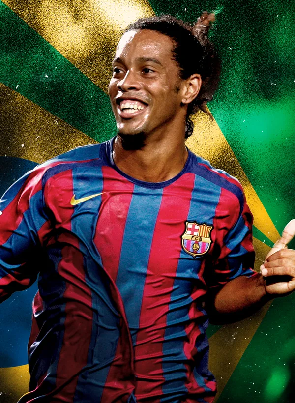

THE MOST FAMOUS FOOTBALLER

Neymar:The Brazilian is the most popular footballer on social media, with 134.6 million followers on Neymar's Instagram account,[1] and Neymar plays for French club Paris Saint-Germain
Cristiano Ronaldo: Portuguese player Cristiano Ronaldo tops the list of the most famous players on various social networking sites, with about 205.8 million followers on Instagram, in addition to more than a hundred million followers on Facebook, and Ronaldo plays for the Italian team Juventus in the center of the attack.

Ronaldinho: Brazilian player Ronaldinho is very popular on social media, with about 51.4 million followers on Instagram, in addition to a large number of followers on other social media, and Ronaldinho played during his career as a striker and attacking midfielder.
James Rodriguez: He is one of the most popular players on various social media, with his Instagram account following about 45 million followers,[1] and this twenty-eight-year-old Colombian player plays for Real Madrid in the attacking midfield positions, both on the wings and in the position.
How to practice the ball correctly
Ball is one of the most popular games in the world, and practicing it requires some tips to avoid injuries and maintain your health. On this page we will give you some tips to practice the ball correctly:
1- Choose a suitable shoe: You should choose a suitable sneaker to play football, basketball or any other type of ball. The shoe should be comfortable and support the foot well.
2- Heating: You must warm up before starting a match or training. Simple warm-up exercises such as running in an enclosed space can be done for 5-10 minutes.
3- Learn the correct movements: You must learn the correct movements to avoid injuries. An athletic trainer can be consulted to learn these movements.
4- Follow the rules of the game: You must follow the rules of the game and abide by them during the match or training to avoid injuries.